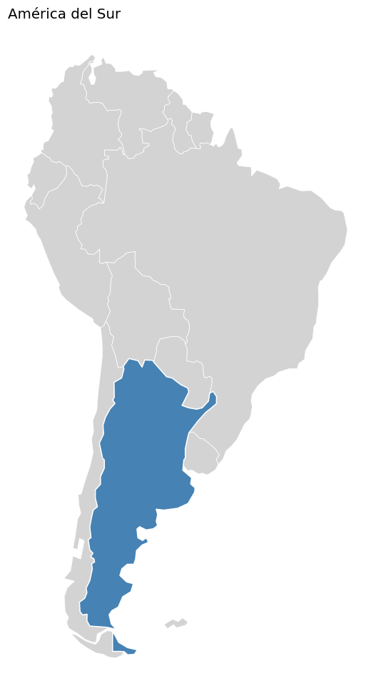
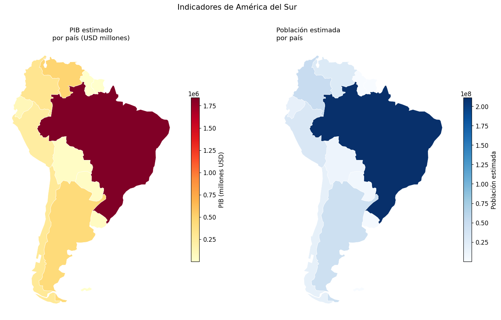
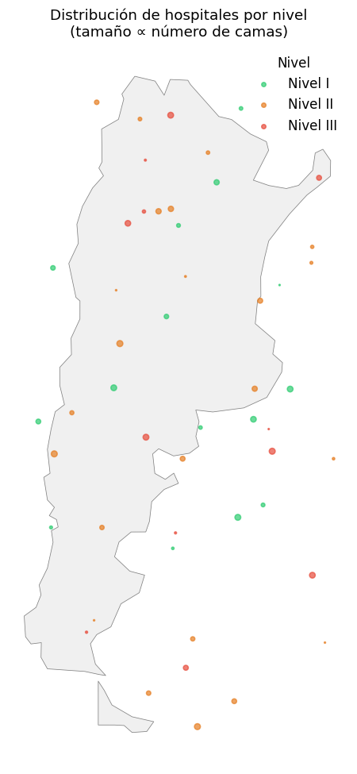

Clase 9 — Datos geoespaciales#
Python y Políticas Públicas
Contenidos#
¿Qué son los datos geoespaciales?
Instalación y primeros pasos con geopandas
Leer y explorar un shapefile
Mapas coropléticos
Joins espaciales
Datos geoespaciales del sector público argentino
Ejercicios
1. ¿Qué son los datos geoespaciales?#
Los datos geoespaciales combinan información tabular (como en pandas) con geometrías que describen la forma y ubicación de objetos en el espacio.
Tipos de geometría:
Point: una ubicación (ej: una escuela, un hospital, un sensor)
LineString: una línea (ej: un camino, un río)
Polygon: un área (ej: una provincia, un municipio, un radio censal)
Formatos comunes:
Shapefile (
.shp): formato clásico de ESRI, muy común en datos del INDEC y organismos públicos.GeoJSON (
.geojson): formato moderno basado en JSON, usado en APIs y web.GeoPackage (
.gpkg): alternativa moderna al shapefile.
¿Por qué es relevante para políticas públicas?
Distribución territorial de programas sociales
Acceso a servicios públicos (escuelas, hospitales, agua)
Análisis de cobertura y brechas regionales
Visualización de indicadores del Censo
2. Instalación y primeros pasos#
# Instalar geopandas (recomendado vía conda)
conda install geopandas
# O con pip
pip install geopandas
geopandas extiende pandas con soporte geoespacial. Un GeoDataFrame es como un DataFrame pero con una columna especial de geometría (geometry).
import pandas as pd
import numpy as np
import matplotlib.pyplot as plt
import matplotlib.colors as mcolors
try:
import geopandas as gpd
from shapely.geometry import Point, Polygon
GEOPANDAS_OK = True
print(f"geopandas {gpd.__version__} disponible")
except ImportError:
GEOPANDAS_OK = False
print("geopandas no instalado. Ejecutá: conda install geopandas")
print("El notebook puede ejecutarse igualmente para ver los conceptos.")
%matplotlib inline
geopandas 1.1.3 disponible
import matplotlib as mpl
import matplotlib.pyplot as plt
# --- Paleta de identidad del curso ---
C = ['#2A6496', '#E07B3F', '#3D9970', '#8E5EA2', '#C0A830', '#637A8A']
mpl.rcParams.update({
'figure.figsize' : (10, 5),
'font.size' : 11,
'axes.titlesize' : 12,
'axes.titleweight' : 'normal',
'axes.spines.top' : False,
'axes.spines.right' : False,
'legend.frameon' : False,
'axes.prop_cycle' : mpl.cycler(color=C),
'figure.dpi' : 110,
})
def tit(ax, t, **kw):
"""Título sin negrita, alineado a la izquierda."""
ax.set_title(t, loc='left', fontweight='normal', **kw)
3. Leer y explorar un shapefile#
El INDEC publica shapefiles del país, provincias y departamentos en: https://www.indec.gob.ar/indec/web/Institucional-Indec-Codgeo
También están disponibles en datos.gob.ar.
if GEOPANDAS_OK:
# Leer shapefile de provincias argentinas
# Descargar de: https://www.indec.gob.ar/ftp/cuadros/territorio/codgeo/Codgeo_Pais_x_prov_con_datos.zip
# gdf = gpd.read_file("provincias/provincia.shp")
# Alternativa: usar el dataset incorporado de geopandas (países del mundo)
world = gpd.read_file('https://raw.githubusercontent.com/nvkelso/natural-earth-vector/master/geojson/ne_110m_admin_0_countries.geojson')
sudamerica = world[world['CONTINENT'] == 'South America']
print(type(sudamerica))
print(sudamerica.dtypes)
print()
sudamerica.head()
else:
print("Instalar geopandas para ejecutar esta celda")
<class 'geopandas.geodataframe.GeoDataFrame'>
featurecla object
scalerank int32
LABELRANK int32
SOVEREIGNT object
SOV_A3 object
...
FCLASS_NL object
FCLASS_SE object
FCLASS_BD object
FCLASS_UA object
geometry geometry
Length: 169, dtype: object
if GEOPANDAS_OK:
# La columna 'geometry' contiene los polígonos
print("Tipo de geometría:", sudamerica.geometry.geom_type.unique())
print("Sistema de coordenadas (CRS):", sudamerica.crs)
print("Bounding box de Argentina:",
sudamerica[sudamerica['NAME'] == 'Argentina'].geometry.bounds.values)
# Graficar
fig, ax = plt.subplots(figsize=(7, 9))
sudamerica.plot(ax=ax, color='lightgray', edgecolor='white', linewidth=0.5)
sudamerica[sudamerica['NAME'] == 'Argentina'].plot(ax=ax, color='steelblue', edgecolor='white')
ax.set_title("América del Sur", fontsize=13, loc='left')
ax.axis('off')
plt.tight_layout()
plt.show()
else:
print("Instalar geopandas para ejecutar esta celda")
Tipo de geometría: ['MultiPolygon' 'Polygon']
Sistema de coordenadas (CRS): EPSG:4326
Bounding box de Argentina: [[-73.415436 -55.25 -53.628349 -21.83231 ]]

4. Mapas coropléticos#
Un mapa coroplético colorea cada unidad geográfica según el valor de una variable. Es ideal para mostrar distribuciones territoriales de indicadores.
Para Argentina, el flujo es:
Leer el shapefile de provincias del INDEC.
Tener un DataFrame con indicadores por provincia.
Hacer un merge.
Graficar con
gdf.plot(column='variable').
if GEOPANDAS_OK:
# Ejemplo con datos del mundo (PIB per cápita de Sudamérica)
fig, axes = plt.subplots(1, 2, figsize=(14, 8))
# Mapa 1: PIB per cápita
sudamerica.plot(
column='GDP_MD',
ax=axes[0],
cmap='YlOrRd',
legend=True,
legend_kwds={'label': 'PIB (millones USD)', 'shrink': 0.6},
edgecolor='white',
linewidth=0.5,
missing_kwds={'color': 'lightgray'}
)
axes[0].set_title("PIB estimado\npor país (USD millones)", fontsize=12)
axes[0].axis('off')
# Mapa 2: Población
sudamerica.plot(
column='POP_EST',
ax=axes[1],
cmap='Blues',
legend=True,
legend_kwds={'label': 'Población estimada', 'shrink': 0.6},
edgecolor='white',
linewidth=0.5,
)
axes[1].set_title("Población estimada\npor país", fontsize=12, loc='left')
axes[1].axis('off')
plt.suptitle("Indicadores de América del Sur", fontsize=14, y=1.01)
plt.tight_layout()
plt.show()
else:
print("Instalar geopandas para ejecutar esta celda")

Mapa coroplético de provincias argentinas#
El flujo completo para datos de Argentina:
if GEOPANDAS_OK:
# Paso 1: Cargar el shapefile de provincias
# DESCARGAR DE: https://www.indec.gob.ar/ftp/cuadros/territorio/codgeo/Codgeo_Pais_x_prov_con_datos.zip
# gdf_prov = gpd.read_file("provincias/provincia.shp")
# gdf_prov = gdf_prov.rename(columns={'nam': 'provincia'})
# Paso 2: Datos de indicadores por provincia
np.random.seed(42)
indicadores = pd.DataFrame({
'provincia': [
'Ciudad Autónoma de Buenos Aires', 'Buenos Aires', 'Catamarca', 'Chaco',
'Chubut', 'Córdoba', 'Corrientes', 'Entre Ríos', 'Formosa', 'Jujuy',
'La Pampa', 'La Rioja', 'Mendoza', 'Misiones', 'Neuquén',
'Río Negro', 'Salta', 'San Juan', 'San Luis', 'Santa Cruz',
'Santa Fe', 'Santiago del Estero', 'Tierra del Fuego', 'Tucumán'
],
'pobreza_2023': [18.5, 40.1, 38.2, 55.6, 22.1, 35.4, 46.8, 38.7, 58.2, 45.3,
28.4, 40.1, 32.8, 44.1, 20.3, 25.7, 49.3, 36.2, 30.1, 19.8,
37.1, 52.4, 17.2, 45.2]
})
# Paso 3: Merge
# gdf_mapa = gdf_prov.merge(indicadores, on='provincia', how='left')
# Paso 4: Graficar
# fig, ax = plt.subplots(figsize=(8, 10))
# gdf_mapa.plot(column='pobreza_2023', ax=ax, cmap='RdYlGn_r', legend=True,
# legend_kwds={'label': 'Tasa de pobreza (%)'}, edgecolor='white')
# ax.set_title("Tasa de pobreza por provincia, 2023", fontsize=13, loc='left')
# ax.axis('off')
# plt.tight_layout()
# plt.show()
print("Datos de indicadores preparados para el merge:")
print(indicadores)
print("\nPasos comentados → descomentarlos una vez descargado el shapefile del INDEC")
else:
print("Instalar geopandas para ejecutar esta celda")
Datos de indicadores preparados para el merge:
provincia pobreza_2023
0 Ciudad Autónoma de Buenos Aires 18.5
1 Buenos Aires 40.1
2 Catamarca 38.2
3 Chaco 55.6
4 Chubut 22.1
5 Córdoba 35.4
6 Corrientes 46.8
7 Entre Ríos 38.7
8 Formosa 58.2
9 Jujuy 45.3
10 La Pampa 28.4
11 La Rioja 40.1
12 Mendoza 32.8
13 Misiones 44.1
14 Neuquén 20.3
15 Río Negro 25.7
16 Salta 49.3
17 San Juan 36.2
18 San Luis 30.1
19 Santa Cruz 19.8
20 Santa Fe 37.1
21 Santiago del Estero 52.4
22 Tierra del Fuego 17.2
23 Tucumán 45.2
Pasos comentados → descomentarlos una vez descargado el shapefile del INDEC
5. Mapas de puntos#
Útil para mostrar la distribución de servicios públicos (escuelas, hospitales, comisarías).
if GEOPANDAS_OK:
# Crear GeoDataFrame de puntos (hospitales simulados en Argentina)
np.random.seed(7)
n_hospitales = 50
# Coordenadas aproximadas del territorio argentino
lons = np.random.uniform(-73, -53, n_hospitales)
lats = np.random.uniform(-55, -22, n_hospitales)
hospitales = gpd.GeoDataFrame(
{
'nombre': [f"Hospital {i}" for i in range(n_hospitales)],
'nivel': np.random.choice(['I', 'II', 'III'], n_hospitales),
'camas': np.random.randint(20, 500, n_hospitales),
},
geometry=[Point(lon, lat) for lon, lat in zip(lons, lats)],
crs='EPSG:4326'
)
fig, ax = plt.subplots(figsize=(7, 9))
world = gpd.read_file('https://raw.githubusercontent.com/nvkelso/natural-earth-vector/master/geojson/ne_110m_admin_0_countries.geojson')
arg = world[world['NAME'] == 'Argentina']
arg.plot(ax=ax, color='#f0f0f0', edgecolor='gray', linewidth=0.5)
colores_nivel = {'I': '#2ecc71', 'II': '#e67e22', 'III': '#e74c3c'}
for nivel, grupo in hospitales.groupby('nivel'):
grupo.plot(ax=ax, color=colores_nivel[nivel], markersize=grupo['camas'] / 20,
alpha=0.7, label=f'Nivel {nivel}')
ax.set_title("Distribución de hospitales por nivel\n(tamaño ∝ número de camas)",
fontsize=12)
ax.legend(title='Nivel', frameon=False)
ax.axis('off')
plt.tight_layout()
plt.show()
else:
print("Instalar geopandas para ejecutar esta celda")

6. Fuentes de datos geoespaciales del sector público argentino#
Fuente |
Contenido |
URL |
|---|---|---|
INDEC |
Shapefiles de provincias, departamentos, radios censales |
|
IGN (Instituto Geográfico Nacional) |
Cartografía oficial de Argentina |
|
Capas georreferenciadas de servicios públicos |
||
MINEDU |
Ubicación de establecimientos educativos |
|
MINSAL |
Red de efectores de salud |
|
OSM (OpenStreetMap) |
Datos geográficos abiertos |
Cómo descargar el shapefile de provincias del INDEC:#
import urllib.request
import zipfile
url = "https://www.indec.gob.ar/ftp/cuadros/territorio/codgeo/Codgeo_Pais_x_prov_con_datos.zip"
urllib.request.urlretrieve(url, "provincias.zip")
with zipfile.ZipFile("provincias.zip", 'r') as z:
z.extractall("shapefiles/")
gdf = gpd.read_file("shapefiles/provincia.shp")
7. Ejercicios#
Ejercicio 1#
Si tenés geopandas instalado:
Descargá el shapefile de provincias del INDEC.
Hacé un merge con el DataFrame
indicadoresdefinido en esta clase.Generá un mapa coroplético de la tasa de pobreza, con una paleta de colores divergente (verde = menor pobreza, rojo = mayor pobreza).
Agregá el nombre de las provincias con
gdf.apply(lambda x: ax.annotate(...)).
Ejercicio 2 (sin geopandas)#
Usando solo pandas y matplotlib, creá un mapa de calor por región (heatmap) que muestre la tasa de pobreza promedio de las provincias del NOA, NEA, Cuyo, Patagonia y Pampeana para los años 2021, 2022 y 2023. Usá el dataset de la Clase 7.
# Ejercicio 2: heatmap sin geopandas
import pandas as pd
import numpy as np
import matplotlib.pyplot as plt
np.random.seed(42)
provincias_sample = ['CABA', 'Buenos Aires', 'Córdoba', 'Santa Fe', 'Mendoza',
'Tucumán', 'Salta', 'Chaco', 'Misiones', 'Corrientes',
'Neuquén', 'Río Negro', 'Chubut']
regiones = ['AMBA', 'Pampeana', 'Pampeana', 'Pampeana', 'Cuyo',
'NOA', 'NOA', 'NEA', 'NEA', 'NEA',
'Patagonia', 'Patagonia', 'Patagonia']
df_ej = pd.DataFrame({
'provincia': provincias_sample,
'region': regiones,
'pobreza_2021': np.random.uniform(15, 62, len(provincias_sample)).round(1),
'pobreza_2022': np.random.uniform(14, 60, len(provincias_sample)).round(1),
'pobreza_2023': np.random.uniform(13, 58, len(provincias_sample)).round(1),
})
# Tu solución aquí